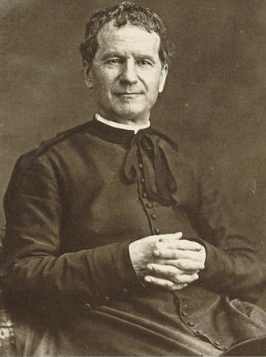

Saint John Bosco "Don Bosco"
"Don Bosco" redirects here. For other uses, see Don Bosco (disambiguation). For schools of that name, see Don Bosco School (disambiguation). "St John Bosco" redirects here. For colleges of that name, see St John Bosco College. John Melchior Bosco (Italian: Giovanni Melchiorre Bosco; 16 August 1815,[4] Piedmontese: Gioann Melchior Bòsch – 31 January 1888),[5][6][7] popularly known as Don Bosco [ˈdɔm ˈbɔsko, bo-],[8] was an Italian Roman Catholic priest, educator, and writer of the 19th century. While working in Turin, where the population suffered many of the ill-effects of industrialization and urbanization, he dedicated his life to the betterment and education of street children, juvenile delinquents, and other disadvantaged youth. He developed teaching methods based on love rather than punishment, a method that became known as the Salesian Preventive System.[9] A follower of the spirituality and philosophy of Francis de Sales, Bosco was an ardent devotee of Mary, mother of Jesus, under the title Mary Help of Christians. He later dedicated his works to de Sales when he founded the Salesians of Don Bosco, based in Turin.[10] Together with Maria Domenica Mazzarello, he founded the Institute of the Daughters of Mary Help of Christians, now commonly known as the Salesian Sisters of Don Bosco, a religious congregation of nuns dedicated to the care and education of poor girls. He taught Dominic Savio, of whom he wrote a biography that helped the young boy be canonized. He is one of the pioneers of Mutual Aid Societies that were initiated as collaborative financial support to young migrant Catholic Workers in the city of Turin. In 1850 he drew up regulations to assist apprentices and their companions when any of them was involuntary without work or fell ill.[11] On 18 April 1869, one year after the construction of the Basilica of Mary Help of Christians in Turin, Don Bosco established the Association of Mary Help of Christians (ADMA) connecting it with commitments easily fulfilled by most common people, to the spirituality and the mission of the Salesian Congregation (CG 24 SDB, 1996, NR. 80). The ADMA was founded to promote the veneration of the Most Holy Sacrament and Mary Help of Christians (Don Bosco, Association of the Devotees of Mary Help of Christians, San Benigno Canavese, 1890, page 33).[12] In 1875, he began to publish the Salesian Bulletin.[13][14] The Bulletin has remained in continuous publication, and is currently published in 50 different editions and 30 languages.[13] In 1876, Bosco founded a movement of laity, the Association of Salesian Cooperators, with the same educational mission to the poor.[15] Bosco established a network of organizations and centres to carry on his work. Following his beatification in 1929, he was canonized as a saint in the Roman Catholic Church by Pope Pius XI in 1934.
1.Fr. Tomy Mathew Kunnakatt
2.Fr.Tijo Thomas
3.Br. Patras Hasda
1. Mrs. Gitali Sen
2. Mr. John Joseph
3. Mrs. Devika Gurung
4. Mrs. Rupa Keshari
5. Mr. Shekhar Anand
6. Mr. Samir Biswas
7. Mr. Ashok Kumar
8. Mr. Amlan Murmu
9.Mr. Niraj Kumar
10. Ms. Monika Sellesh
11. Mr. Dipak Mahato
12. Mr. Sunit Kumar Nath
13. Mr. Shiv Kumar Kaur
14. Mr. Sunny Paul Kisku
15. Ms. Preeti Kumari
16. Ms. Anamika Singha
17. Mr. Ezekiel M. Sangma
18. Mrs. Divya Deepshika
19. MR. Arko Pal
1. Mrs. Jermina Rai
2. Mr. Albert Xalxo
3. Mrs. Pritisha Thapa
4. Mrs. Somam Kar
5. MS. Lawrencia Lepcha
6. Ms. Flora Sukita Rai
7. Ms. Hanna Lepcha
8. Mrs. Ashalata Mandal
9. Mr. Sujit Sikdar
10. Ms. Moushami Banerjee
11. Mrs. Dollu Rashmi Ekka
12. Mrs. Saloni
13. Mrs. Neha John
14. Ms. Priyanka Das
15. Ms. Anamika Tigga
16. Ms. Celsi Mansani
17. Ms. Agnes Rai
18. MS. Anupama Rai
19. Mrs. Sweata Barman
1. Mr. Surendra Tamang
2. M. Gabriel Murmu
3. Mrs. Sampurna Deka
4. Mr. Xavier Sn Deka
5. Mr. Jiban Kisku
6. Mr. Joshi Murmu
7. MS. Earica Lepcha
8. Mrs. Veronica Xaxa
9. Mr. Ujin Minj
10. Mr. Nagendra Kumar
11. Mrs. Monika Kindo
12. Mr. Naiki Kisku
13. Mr. Dup Tshering Lepcha
14. Mrs. Lalita Devi
15. Ms. Rina Kujur
16. Mr. Philip Mandal tudu
17. Mr. Sujit Minj